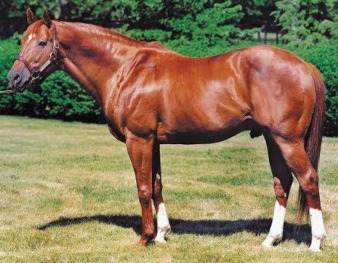

7 najlepszych koni świata
Konie towarzyszą ludzkości od tysięcy lat, będąc symbolami siły, gracji i szybkości. Choć jeździectwo ma swoje legendy w każdej epoce, niektóre wierzchowce zapisały się w historii na stałe, ustanawiając rekordy i zdobywając serca widzów na całym świecie. Poniższa tabela prezentuje zestawienie siedmiu absolutnie najlepszych koni wszechczasów, wyróżnionych ze względu na ich niezwykłe osiągnięcia, długowieczność kariery oraz wpływ, jaki wywarły na sport jeździecki i hodowlę.
Ranking najlepszych koni według osiągnięć w sporcie
| Imie konia | Rok | Zasługa | Dyscyplina |
|---|---|---|---|
| Secretariat | 1973 | Zwyciężył 3 razy Triple crown | Wyścigi |
| Red Rum | 1974 | Zwyciężył 3 razy Grand National | Wyścigi |
| Millennium | 1995 | Zwyciężył mistrzostwa świata | Skoki przez przeszkody |
| Seabiscuit | 1940 | Wygrana w Santa Anita Handicap | Wyścigi |
| Big Star | 2016 | Złoty medal w igrzyskach olimpijskich | Skoki przez przeszkody |
| Valegro | 2014 | Zwyciężył mistrzostwa świata | Ujeżdżenie |
| Windsome Adante | 2005 | Zwyciężył mistrzostwa świata | Skoki przez przeszkody |
Galeria zdjęć
Galeria ta prezentuje sylwetki trzech niekwestionowanych gigantów świata jeździectwa, uwieczniając momenty ich chwały. Zanurz się w świat wielkich koni i zobacz czystą pasję oraz niesamowitą atletykę. Podziwiaj energię i siłę Secretariata w szaleńczym biegu ku chwale, charyzmę Red Ruma, który zasłynął z niezwykłej wytrwałości i determinacji, oraz precyzję i majestatyczne skoki Big Stara, mistrza olimpijskiego. Trzy legendy, dwie dyscypliny, jeden wspólny duch zwycięstwa.



Multimedia i wizualizacja legendy - Secretariat
Wideo: Niezrównany Finał Belmont Stakes - Secretariat
Lokalizacja: Tor Belmont Park – Miejsce Rekordu Świata
Fakty i cechy, jakie musi posiadać wierzchowiec, aby zostać uznanym za legende
Poniżej znajdują się kluczowe cechy, które definiują wierzchowca jako światową legendę:
- Niezwykłe osiągnięcia (Tytuły Triple Crown, Puchary Świata, Złote Medale Olimpijskie)
- Rekordowa szybkość i wytrzymałość (Ustanowione rekordy czasowe na torach lub długość kariery)
- Wpływ na hodowlę (Wartość jako reproduktor i linia genetyczna)
- Charyzma i popularność (Zdolność do zjednywania fanów i wpisywania się w popkulturę)
- Wyjątkowa więź z jeźdźcem/trenerem (Długotrwała i udana współpraca)
- Wszechstronność (Zdolność do osiągania sukcesów w różnych warunkach i na różnych nawierzchniach)
- Długowieczność kariery sportowej (Utrzymanie formy na najwyższym poziomie przez wiele sezonów)